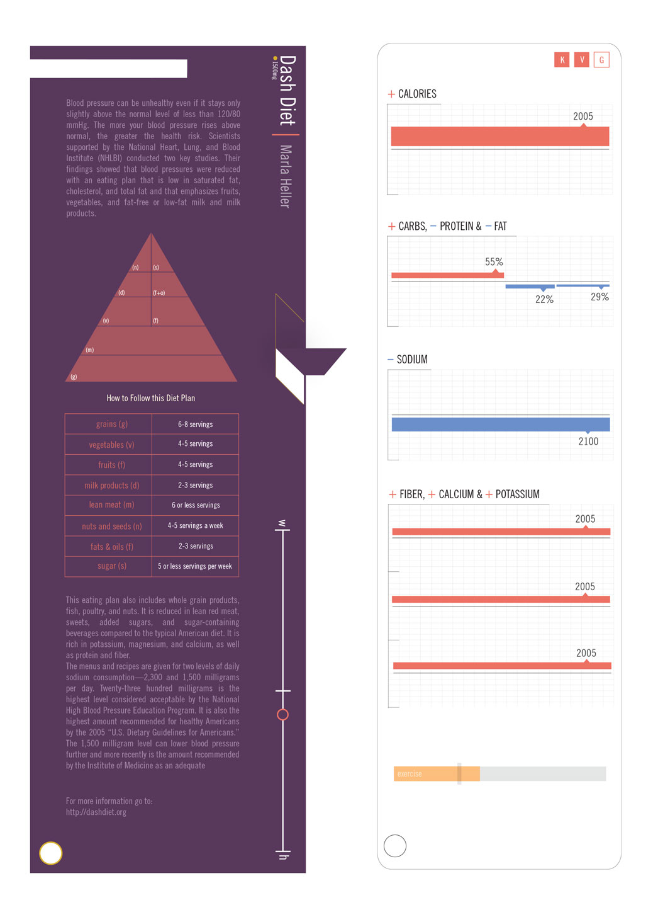
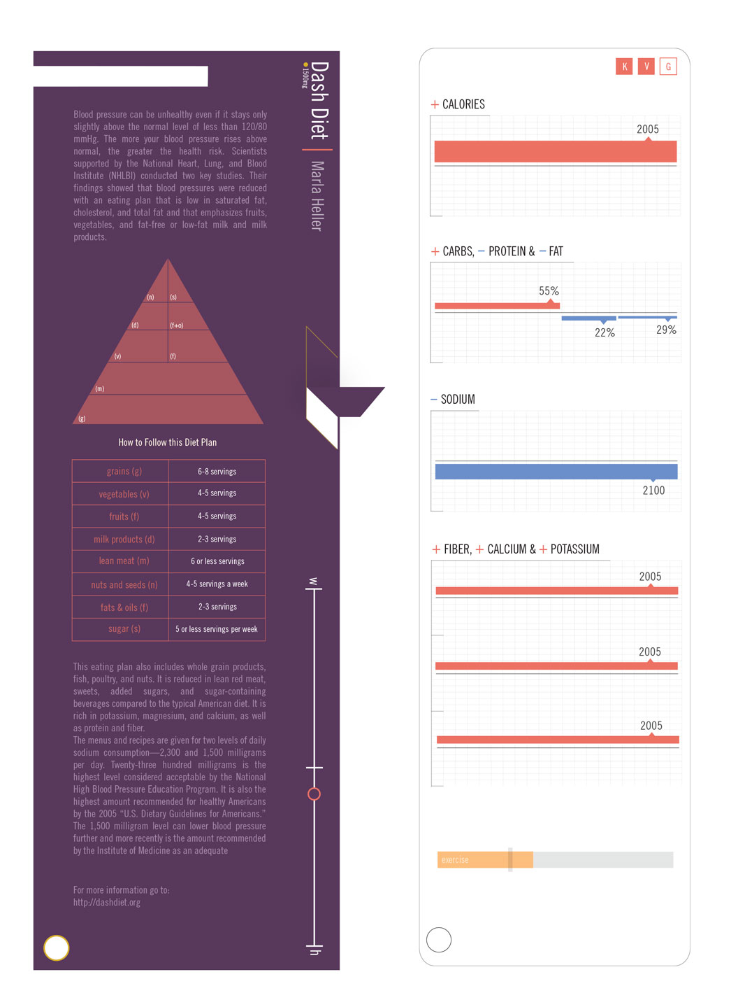
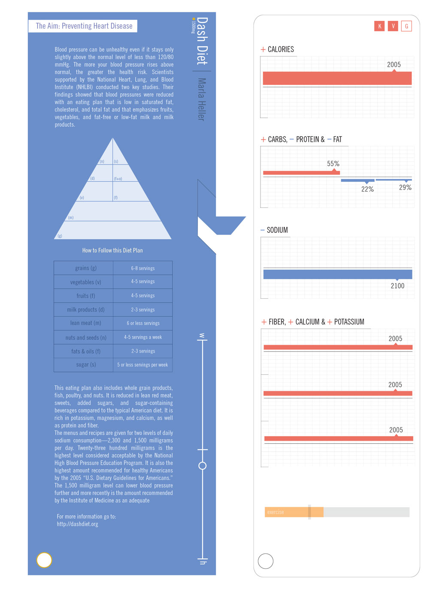
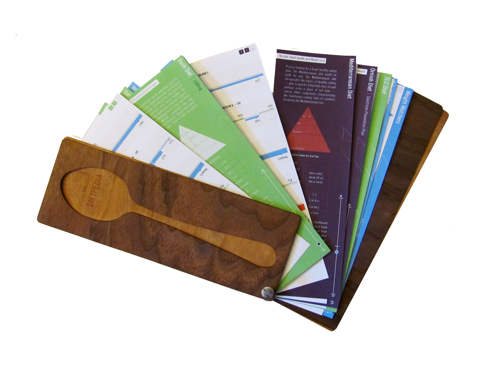
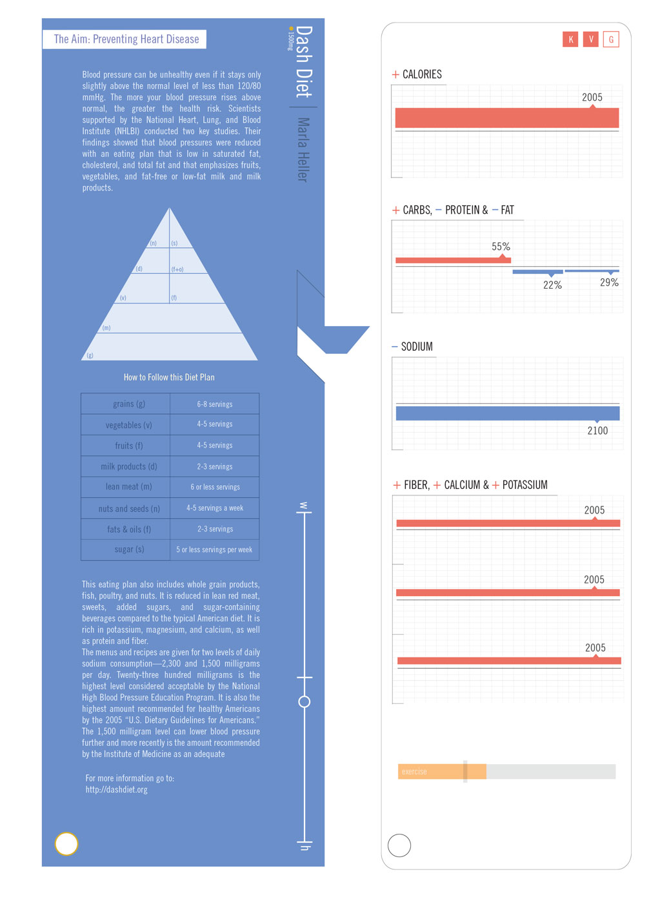
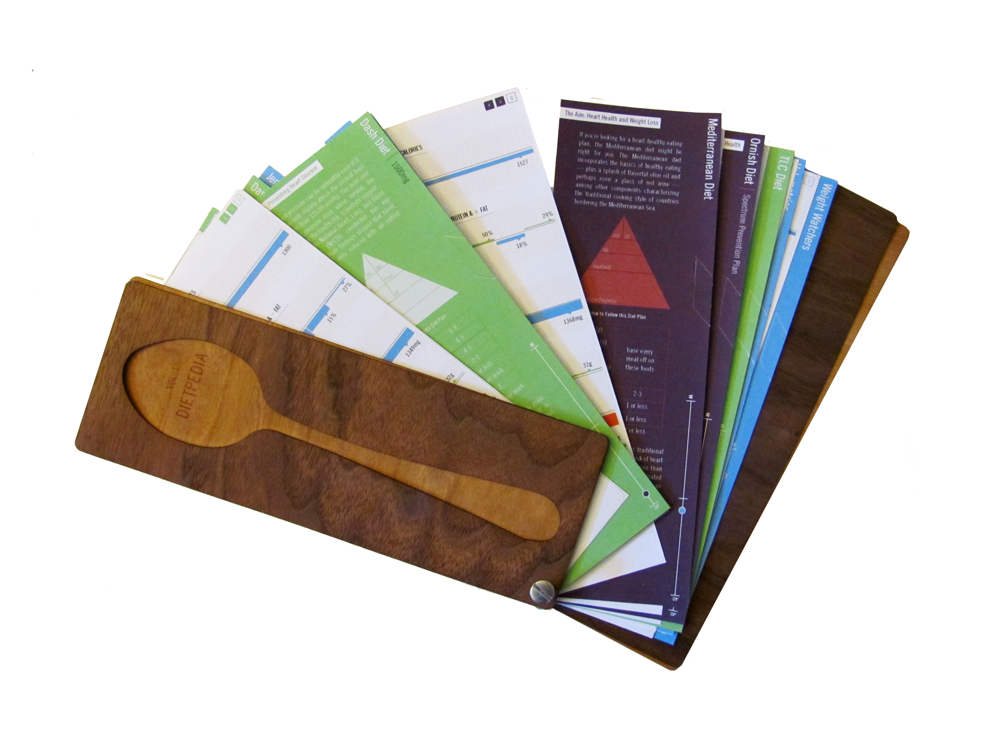

Dietpedia
Dietpedia started as an infographic to depict what were the healthiest weight-loss diets. I researched the thirty most popular diets as well as their respective calorie, carbohydrate, protein, fat, fiber, potassium, and calcium intake. I averaged these values for each category among all the diets, and showed how each diet fared against the averages for each aspect. However, I wanted this to be more useful and interactive. This inspired me to create a portable collection of flashcards that detailed each diet and organized them for ease of use. The green cards indicate diets for health, blue for weight-loss, and purple for both health and weight loss.
 

 


